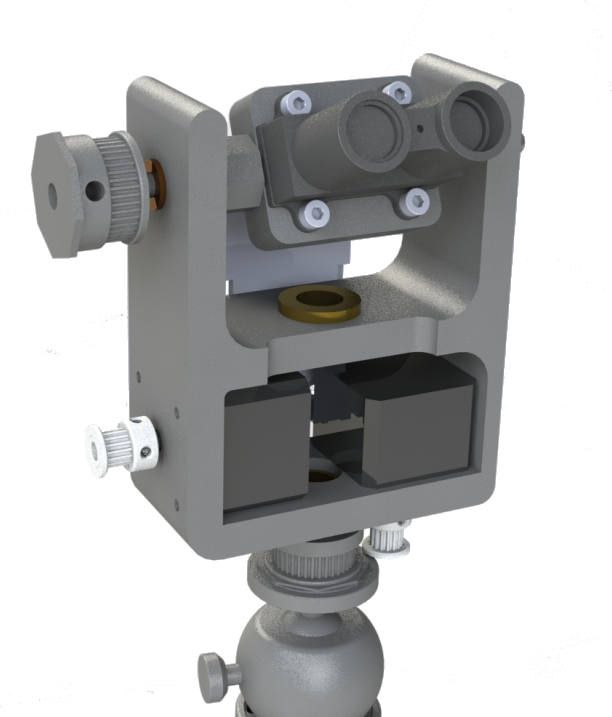
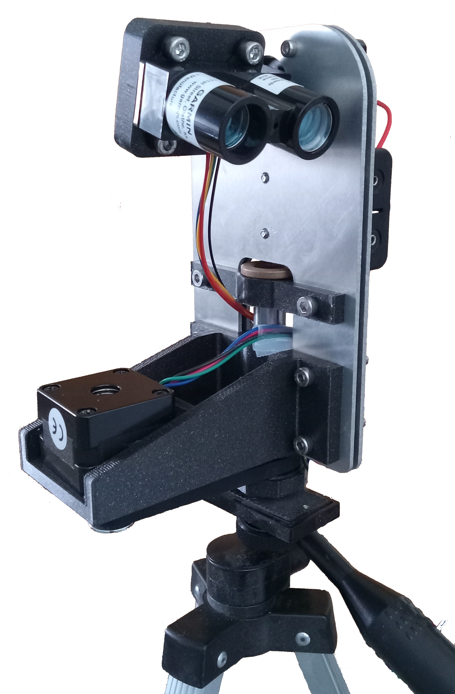
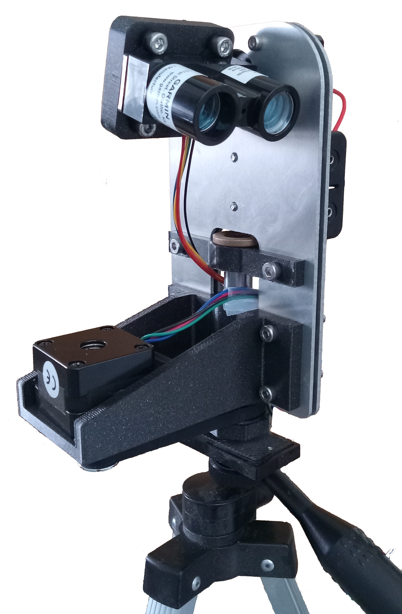

LiDAR
I have been working on a high-resolution LiDAR scanner using a pair of low-power stepper motors and a LiDAR-Lite v3. I was inspired by the masterful David Cambridge but wanted to make a lighter, more portable version. Using timing belt gear reductions, I was able to achieve +/- 0.45 degree accuracy, which is within the angular resolution of the Lidar-Lite. The first version used a 3D printed chassis and was used for the first scan you can see below.
 

The second version (at left) uses a composite chassis with 1/8" aluminium sandwiching a 3D printed honeycomb. This allowed for higher stiffness and precision, lower second moment of inertia, and a more tightly integrated design while maintaining weight. I had intended to use microstepping to decrease the mechanical complexity of the device, but the stepper motors may not be able to provide enough torque. However, this may just be a limitation of the current that can be provided by my power supply - more testing is required. The software, written in C++ for Arduino, has a unique scan pattern to conserve power, and will convert the requested scan resolution to the closest one supported by microstepping.
Version three of the project will focus on maximizing the scan rate. I will likely switch over to DC motors with encoders so that the LiDAR can scan with a constant angular velocity (as opposed to individual steps) without fear of losing steps.